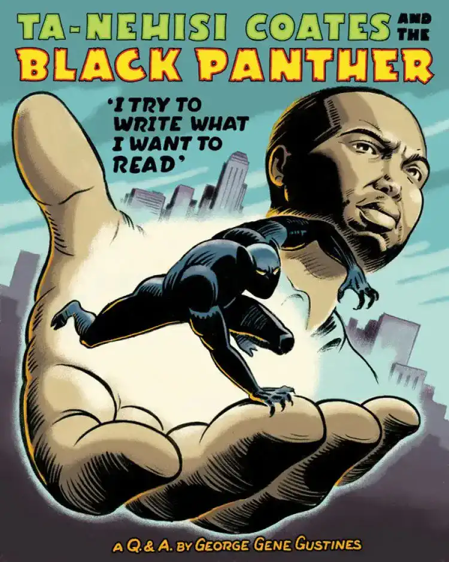

<!DOCTYPE html>
<html lang="en"x-data="{menuIsOpen: false}" :class="{noscroll:menuIsOpen}"></html>
<head>
    <meta charset="UTF-8">
    <meta http-equiv="X-UA-Compatible" content="IE=edge">
    <meta name="viewport" content="width=device-width, initial-scale=1.0">
    <link rel="stylesheet" href="../src/css/style.css">
    <link rel="alternate" hreflang="fr" href="http://architect.claudesamba.fr
    " />
<link rel="alternate" hreflang="es" href="http://architect.claudesamba.fr
" />
<link rel="alternate" hreflang="de" href="http://architect.claudesamba.fr
" />
    <script defer src="https://unpkg.com/alpinejs"></script>
    
    
    <title>Film</title>
   
    <link rel="icon" href="../public/icones/logo.svg" />
</head>

<body>
    <header class="header">
       
        <div class="header__logo-lang">
        <a href="../fr/index.html" onclick="document.cookie = 
        `nf_lang=en; path=/ ; SameSite=Strict`
        ">
          
        </a>
        </div>
        <div class="header__logo">
             <a class="header__link-logo" href="/en/index.html">KULTURE</a>
        </div>


        <button  class="header__menubtn menubtn" aria-controls="mainNav" @click="menuIsOpen = !menuIsOpen" :class="menuIsOpen &&'menubtn--open'" >
            <span class="menubtn__bar"></span>
        </button>

          <nav  id="mainNav" class="header__menu menu"  x-show="menuIsOpen" x-transition.duration.800ms >
             
                <a  class="page-title" href="../en/index.html">
                    KULTURE
                </a>
            

            <ul class="menu__list">

                <li class="menu__item">
                    <a  class="menu__link "href="movie.html">
                        Black Panther
                    </a>
                </li>


                <li class= "menu__item">
            <a class="menu__link "href="director.html">
                Ryan Coogler
            </a>
        </li>


        <li class= "menu__item">
            <a class="menu__link "href="music.html">
              Lift Me Up 
                 
            </a>
        </li>


        <li class= "menu__item">
            <a class="menu__link " href="book.html">
        A nation under our feet 
        </a>
    </li>


        <li class= "menu__item">
            <a class="menu__link " href="formulaire.html">
            Contact
        </a>
    </li>

      
    </header>


    <main>
    <h1 class="titre_article"> A Nation Under Our Feet - The Revolutionary Work of Ta-Nehisi Coates </h1>
<p class="date_publication"> By Claude MALANDA 
    </p> 
    
    <p class="date_publication"> Published on 24/10/2024, updated today at 9:45 AM
    </p>
    
   
    <div class="chapo">
    <p> When we talk about Black Panther, the first image that often comes to mind is that of the Wakandan superhero. However, the character of Black Panther has a much richer history that goes beyond the adventure on the big screen, and one of the most significant works is Ta-Nehisi Coates' book.</p>
</div>

  



<p>The comic "Black Panther: A Nation Under Our Feet" features the iconic Marvel character, Black Panther, also known as T'Challa. The story takes place in the fictional African kingdom of Wakanda, the home country of Black Panther, known for its advanced technology and precious resources, including vibranium.</p>
<p>The series' plot explores the challenges faced by the nation of Wakanda when a superhuman terrorist group triggers a revolt, plunging the kingdom into chaos. T'Challa, as both king and Black Panther, must confront internal and external threats while seeking to guide his country towards a better future.</p> 
<p>The book highlights important themes such as leadership, politics, revolution, and identity. It also explores tensions and conflicts that arise within Wakandan society.</p>

  <div class="section_clair">

    <div class="image-container">
    
   </div>
   
   <p>There is a close connection between this book and the 2018 film. This connection lies in the fact that "Black Panther: A Nation Under Our Feet" provides an in-depth perspective on the character of Black Panther, his Wakandan kingdom, and the challenges he faces as a leader. While the film "Black Panther," directed by Ryan Coogler, draws inspiration from elements of the Black Panther character and the Wakanda universe mentioned in the book, it presents an independent story.</p> 


  </div>

  <div class="image-container">
  
</div>

<p>Ta-Nehisi Coates, an American writer, journalist, and essayist, has left an indelible mark on literature and contemporary social debates. Before dedicating himself to writing, his journalistic career saw him work as a correspondent for the prestigious magazine "The Atlantic," where he addressed various subjects, from politics to culture to racial issues. His articles played a key role in exploring crucial issues and stimulating essential debates.</p> 
<p>Read also: A Nation Under Our Feet: Black Panther, Afrofuturism, and Reflective Potential </p>

<p>His bibliography includes influential works that have sparked deep debates and reflections on American society. Some of his notable works are mentioned here.</p>

<div class="button-article"> 
    
   <button class="btn--fill"> <a a class="btn__fill" href="timeline.html"> Read more</a>
  </button> 
</div>

</main>
<footer class="footer">

    <div class="menu--separation">
      <span class="menu__barresep"></span>
  </div>

    <div class="footer-colum">
        

        <div class="menu__container">
            <p class="footer__texte">Claude MALANDA</p>
            <a class="footer__mail" href="mailto:claude.malamda_samba@edu.univ-fcomte.fr">claude.malamda_samba@edu.univ-fcomte.fr</a>

            <div class="reseau">
                <a href="#">
                    
                </a>
                <a href="#">
                    
                </a>
                <a href="#">
                    
                </a>
            </div>
        </div>
   

    
        <div class="footer_p">

          
            <p><a class="footer__lien-title" href="../en/about.html">About</a>
            </p>
            
           <p><a class="footer__lien-title"  href="../en/about.html">Glossary</a></li>
           </p> 
            <p><a class="footer__lien-title"   href="../en/other.html">Other projects</a>
           </p>

        
           
        </div>
</div>
        <p class="footer__p">
          Project carried out as part of an educational exercise at the
            <a class="footer__link" href="http://mmimontbeliard.com/contact">
              Montbéliard MMI department
            </a>
        </p>
    
</footer>
</body>
</html>